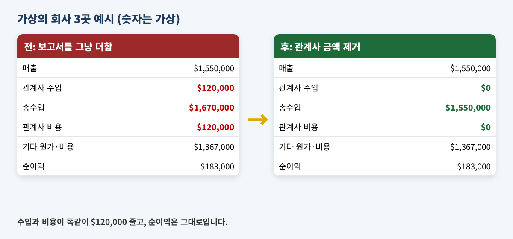
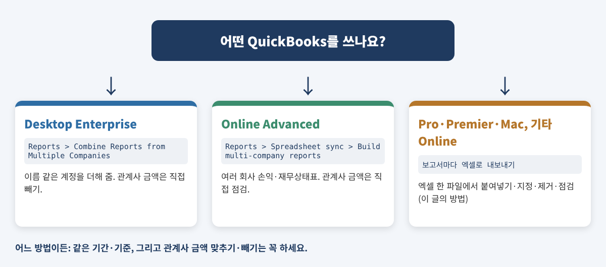
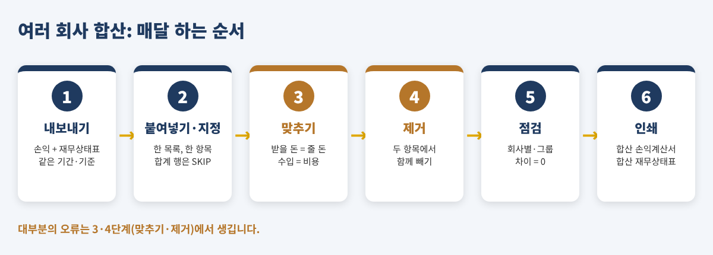

식당을 하면서 그 건물을 가진 LLC를 따로 두었거나, 가게와 케이터링 회사를 함께 운영하면 언젠가 은행이나 SBA 대출 기관, 담당 CPA가 "그룹 전체 손익계산서와 재무상태표를 한 장씩 주세요"라고 합니다. QuickBooks는 회사마다 파일이 따로라서 대부분의 버전에는 합쳐 주는 버튼이 없습니다. 숫자를 엑셀에 옮겨 적다 보면 합계가 안 맞고, 한 회사가 다른 회사에 낸 임대료가 수입과 비용 양쪽에 그대로 남습니다. 이 글은 QuickBooks와 엑셀(또는 구글 시트)만으로 따라 할 수 있는 방법을 정리했습니다.
소유주가 같고 회계연도가 같은 회사 2~4개를 관리하는 사장님과 북키퍼를 위한 글입니다. 외부 투자자가 지분 일부를 갖고 있거나 원화로 장부를 쓰는 회사가 있다면 아래 FAQ를 먼저 보세요.
합산 재무제표는 여러 회사를 한 회사처럼 보여 줍니다. 우리 회사들끼리 주고받은 것은 바깥과의 거래가 아니므로 빼야 합니다. 보통 세 가지입니다.


모든 회사를 같은 기간, 같은 기준(현금주의 또는 발생주의)으로 뽑아야 합니다. 한 회사만 회계연도나 기준이 다르면 먼저 맞추세요.
시트 하나에 회사(A, B, C…), 계정, 금액, 합산 항목 네 열을 만듭니다. 회사별 보고서 행을 아래로 이어 붙이고, 각 계정 옆에 짧은 합산 항목 이름을 적습니다. 뜻이 같은 계정은 같은 항목으로(Phone과 Telephone은 둘 다 기타 영업비용).
| 회사 | 계정 (보고서 그대로) | 금액 | 합산 항목 |
|---|---|---|---|
| A | Checking - Operating | $72,000 | 현금·은행 |
| A | Accumulated Depreciation | ($70,000) | 유형자산(순액) |
| A | Total Assets | $255,000 | SKIP (합계 행) |
| A | Rent - Property LLC | $96,000 | 관계사 비용 |
| B | Rental Income - Restaurant LLC | $96,000 | 관계사 수입 |
| B | Due from Restaurant LLC | $16,000 | 관계사에서 받을 돈 |
가상의 회사 3곳으로 만든 예시 값입니다.
실수를 막는 규칙 세 가지: 금액의 부호는 보고서 그대로(감가상각누계액·사장 인출은 마이너스), 제목 행과 합계 행은 모두 SKIP, 재무상태표의 Net Income 행은 따로 항목을 정해 손익계산서와 대조합니다.
합산표는 항목·회사마다 수식 하나면 됩니다. 목록이 Data 시트의 A~D열에 있고, C1에 회사 코드, A5에 항목 이름이 있다면:
=SUMIFS(Data!$C:$C, Data!$A:$A, C$1, Data!$D:$D, $A5)
회사 열로 오른쪽, 항목 행으로 아래 복사하고, 합계 열은 =SUM()으로 더합니다. 구글 시트에서도 똑같이 작동합니다.
빼기 전에 양쪽이 같아야 합니다. 모든 회사의 '받을 돈' 합계와 '줄 돈' 합계가 같아야 하고, 관계사 수입과 관계사 비용도 같아야 합니다. 다르면 한 회사만 기록한 거래가 있다는 뜻입니다 - 월말에 이동 중인 송금이나 한 회사가 다른 회사 청구서를 대신 낸 경우가 흔합니다. QuickBooks에서 고친 뒤 다시 내보내세요.
그다음 제거(Eliminations) 열을 만듭니다. 제거 한 건은 같은 표의 반대편 두 항목에서 같은 금액을 뺍니다.
| 내용 | 뺄 항목 | 함께 뺄 항목 | 금액 |
|---|---|---|---|
| 임대료: 식당 → 건물 LLC | 관계사 수입 | 관계사 비용 | $96,000 |
| 관리비: 케이터링 → 식당 | 관계사 수입 | 관계사 비용 | $24,000 |
| 아직 안 낸 임대료 | 관계사에서 받을 돈 | 관계사에 줄 돈 | $16,000 |
예시 값입니다.
항목별 제거 금액은 =-(SUMIF(Elim!$B:$B,$A5,Elim!$D:$D)+SUMIF(Elim!$C:$C,$A5,Elim!$D:$D)), 합산 열은 합계 + 제거입니다. 예시에서 합산 수입은 $1,670,000에서 $1,550,000로, 자산은 $1,286,000에서 $1,270,000로 줄고, 순이익은 $183,000 그대로입니다.

| 점검 | 계산 | 정상 |
|---|---|---|
| 회사별 균형 | 자산 합계 - (부채 + 자본) | 0 |
| 순이익 일치 | 재무상태표 Net Income - 손익계산서 순이익 | 0 |
| 관계사 금액 남지 않음 | 합산 받을 돈 + 줄 돈 + 관계사 수입 + 비용 | 0 |
| 합산표 균형 | 합산 자산 - 합산 부채·자본 | 0 |
회사 균형이 안 맞으면 실제 계정을 SKIP했거나 합계 행을 지정한 경우가 대부분입니다. 순이익이 다르면 두 보고서의 기간이 다른 것입니다.
기본 보고서로는 안 됩니다. Intuit 커뮤니티 답변도 회사별 보고서를 엑셀로 내보내거나 외부 보고서 앱을 쓰라고 안내합니다.
아닙니다. 합산 항목 열이 짝을 맞춰 줍니다. 계정 이름이 같아야 하는 것은 Desktop Enterprise의 합산 기능뿐입니다.
비지배지분(minority interest)을 따로 표시해야 합니다. 이 방법은 그 부분을 다루지 않으니 CPA와 상의하세요.
근거가 남는 환율로 먼저 달러로 바꾼 뒤 붙여넣으세요. 외화 환산 규칙은 이 글의 범위 밖입니다.
대출 조건(커버넌트)을 보는 은행이 있으면 매달, 아니면 분기마다와 연말에 하세요. 매번 같은 보고서 설정으로 내보내면 행 순서가 그대로 유지됩니다.
위 과정을 그대로 해 주는 여러 회사 합산 재무제표 만들기 2026은 아래 무료 키트 다운로드에서 가입 없이 무료로 받으실 수 있습니다(엑셀 + PDF 가이드).
이 글은 교육용 정보이며 세무·법률·회계 자문이 아닙니다. 예시 회사와 숫자는 가상입니다. 메뉴 이름은 2026년 11월 Intuit 도움말 기준이며 바뀔 수 있습니다. QuickBooks는 Intuit Inc.의 등록 상표이며, 이 글은 Intuit와 제휴·보증 관계가 없습니다. QuickBooks is a registered trademark of Intuit Inc.